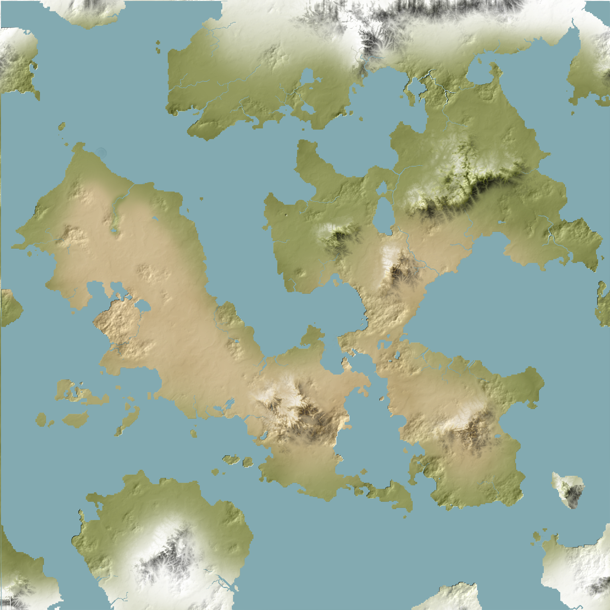

Berita Terkini
Ditemukan Planet Baru - "Sierra"
Dunia Sierra adalah planet yang sangat luas dengan benua yang terbelah menjadi dua. Planet ini ditemukan baru-baru ini oleh NASA dan Roscosmos Rusia pada tahun 2024. Letaknya tidak jauh dari Bumi, kira-kira hanya berjarak 4 tahun cahaya. Benua pertama, yang disebut Sierra, dianggap sebagai tempat “utama” peradaban yang ditemukan oleh teleskop NASA, sedangkan benua yang terbelah tepat di sebelah kirinya adalah Liudoxoya yang “lebih rendah” - dianggap seperti itu karena populasinya yang lebih rendah dan padang pasir yang luas di jantung benua. Selengkapnya

Formasi Negara Baru di Sierra - "Mittlemazigste"
Di bagian paling utara Sierra, terletak semenanjung Mittelian. Lokasi geografisnya agak terisolasi dari bagian lain Sierra karena lautan menjadi dinding pembatas daratan, dan gunung di sebelah timurnya dianggap tidak dapat dilewati karena memiliki gunung tertinggi di dunia: Gunung Molitza. Iklim dan suhunya cukup hangat di bagian selatan, namun semakin dingin ketika Anda pergi ke utara. Ini adalah peta yang diketahui oleh orang Mittel sejak awal, karena pengetahuan tentang Sierra sendiri berkurang selama berabad-abad karena isolasi mereka. Selengkapnya